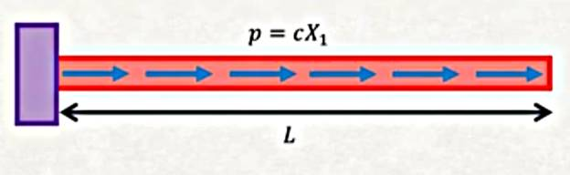

Sonlu Öğeler Metotu (Finite Elements Method -FEM-) - 1
Galerkin, Ağırlıklı Artıklar Metotu (Weighted Residual Method)
WRS diferansiyel denklemleri yaklaşık (approximate) olarak çözebilen bir metottur, bunu tüm yaklaşık fonksiyonun tanım kümesi üzerinden ağırlıklı hata artıklarını sıfıra eşitleyerek yapar. Bununla ne demek istediğimizi birazdan yakından göreceğiz [1, Ders 3].
Örnek olarak [2]'de öğrendiğimiz Euler-Bernoulli kirişlerini tanımlayan denklemi hatırlarsak,
$$ E I \frac{\mathrm{d}^4 y}{\mathrm{d} X_1^4} = q \qquad (1) $$
Biraz düzenleme sonrası
$$ E I \frac{\mathrm{d}^4 y}{\mathrm{d} X_1^4} - q = 0 $$
elde ederim. Amacım öyle bir yaklaşık $y$, ya da $y_{approx}$ diyelim, bulmak ki üstteki denklemi çözebileyim. Bunu $y$ yerine onu yaklaşık temsil edebilen bir diğer fonksiyonu geçirerek yapabilirim. Bir polinom bu işi görebilir; Pek çok diğer yöntemin kullandığı tipik bir polinom vardır,
$$ y_{approx} = a_0 + a_1 X_1 + a_2 X_1^2 $$
diye gider, aslında daha genel olarak olan her terimde "bir katsayı çarpı $X_1$'in bir tür fonksiyonu" gibi bir toplam kullanmak daha iyi olabilir, bu formda,
$$ y_{approx} = a_0 \phi_0(X_1) + a_1 \phi_1(X_1) + a_2 \phi_2(X_1) $$
Daha kısa olarak
$$ y_{approx} = \sum_{i=0}^{n} a_i \phi_i(X) $$
Dikkat $\phi_i(X)$ içinde $X$ var bu $X = X_1,X_2,..,X_n$ anlamında, cebirsel olarak her $\phi$ fonksiyonuna $X$ geçildiğini düşünebiliriz ama her $\phi_i$ tüm $X$ öğelerini kullanmayabilir; üstteki polinom örneğinde mesela $\phi_1$ fonksiyonu sadece $X_1$'i kullanarak bir hesap yapar, diğerleri diğer şekillerde.
Not, $y_{approx}$ gerekli (essential) sınır şartlarını yerine getirmelidir.
Metotun dayandığı ana prensip şudur; eğer çözmeye uğraştığım (1)'deki gibi bir problemde eğer $y$ yerine $y_{approx}$ kullanırsam
$$ \frac{\mathrm{d}^4 y}{\mathrm{d} X_1^4} - q = 0 \qquad \frac{\mathrm{d}^4 y_{approx}}{\mathrm{d} X_1^4} - q \ne 0 $$
tabii ki sıfır olmayan bir sonuç alırdım. Ama $y_{approx}$ eğer $y$'ye oldukca yakınsa sıfır olmasa bile sıfıra yakın bir sonuç alabilirdim.. belki?
Bu yakınlığı bir artık $R$ ile ölçebiliriz,
$$ R = \frac{\mathrm{d}^4 y_{approx}}{\mathrm{d} X_1^4} - q $$
Üstteki formül içinde bilinmeyen $a_i$ değerleri var hatırlarsak. O zaman, eğer "iyi" $a_i$ değerleri seçebilirsem teorik olarak $y_{approx}$ değeri $y$ değerine yaklaşacaktır, ve dolaylı olarak bu $R$'yi minimize eder. Demek ki $R$'yi minimize edebilen bir yaklaşım aynı zamanda $y$'yi yaklaşık olarak çözebilen bir yaklaşım olacaktır.
Daha detaylı olarak ifade etmek gerekirse $D$ tanım alanı üzerinde ifade edilen ağırlıklı artık hataların toplamını sıfıra eşitleyerek bilinmeyen $a$ parametrelerini bulmaya uğraşacağız.
Matematiksel olarak üstteki
$$ \int_D W_i R \mathrm{d} x = 0 $$
olarak formülize edilebilir. Fakat hala bir sorumuz var, ağırlıklı dedik, formüldeki $W_i$ onun için, fakat bu $W_i$ nereden geliyor?
Ağırlık için farklı fonksiyonlar seçilebilir, ve her seçilen fonksiyon tipine göre farklı sonuçlar elde edilebilir. Galerkin metotuna göre $W_i$ deneme fonksiyonu $\phi_i$ ile aynı olacak şekilde seçilir. Bu ve ileriki derslerde öğreneceğimiz Galerkin yaklaşımı çünkü çoğu profosyonel FEM paketi bu yaklaşımı kullanır.
Örnek olarak [3]'te gördüğümüz eksenel yükleme (axial loading) modelini kullanalım.

Eksenel yükleme formülünü üstteki probleme uygulayınca
$$ EA \left( \frac{\mathrm{d}^2 u}{\mathrm{d} X_1^2} \right) = -c X_1 $$
Eşitliğin sağındakileri sola geçirip her şeyi $EA$ ile bölersem, artık (residual) hatasını bulabilirim,
$$ R = \frac{\mathrm{d}^2 u_{approx}}{\mathrm{d} X_1^2} + \frac{c X_1}{EA} $$
Yaklaşıklama fonksiyonumuz ne olacak? Genel formu hatırlayalım,
$$ u_{approx} = a_0 \phi_0(X_1) + a_1 \phi_1(X_1) + a_2 \phi_2(X_1) + a_3 \phi_3(X_1) $$
3'üncü derece polinom kullanabiliriz, tüm dereceler $X_1$'in fonksiyonu olsun $\phi_i = a_i X_1^i$,
$$ u_{approx} = a_0 + a_1 X_1 + a_2 X_1^2 + a_3 X_1^3 $$
Bir gerekli (essential) sınır şartı ekleyebiliriz, ki bu $u_{approx}(0)=0$, çünkü kiriş sol tarafında sabitlenmiştir, ve bunun polinoma yansıması $a_0=0$ olacaktır, yani bu katsayı çıkartılabilir. Yeni hal,
$$ u_{approx} = a_1 X_1 + a_2 X_1^2 + a_3 X_1^3 $$
Galerkin yöntemi kullandığımız için şimdi ağırlık fonksiyonlarını seçiyoruz, fakat daha önce belirttiğimiz gibi Galerkin yönteminde $\phi_i$ ve ağırlık $W_i$ aynı seçilir, yani
$$ W_1 = \phi_1(X_1) = X_1 \qquad W_2 = \phi_2(X_1) = X_1^2 \qquad W_3 = \phi_3(X_1) = X_1^3 $$
Artık elimizde
$$ \int_D W_i R \mathrm{d} x = 0 $$
problemini çözmek için gerekli her şey var. $R$'nin ne olduğunu biliyoruz çünkü o ana problem tanımından geliyor,
$$ = \int_{0}^{L} W_i \left( \frac{\mathrm{d}^2 u_{approx}}{\mathrm{d} X_1^2} + \frac{c X_1}{EA} \right) \mathrm{d} X_1 = 0 $$
Entegral sınırını 0 ila $L$ arası yaptık çünkü etki alanını biliyoruz artık, hesap tüm kiriş boyunca yapılacak, $L$.
Şimdi bulmamız gereken bilinmeyenlere bakıyoruz, üç tane var $a_1$, $a_2$, $a_3$. Üç tane bilinmeyeni çözmek için üç tane denklem gerekir, ki tüm sistemi çözünce bilinmeyenler bulunabilsin. Ama üstte bir tane denklem var, nasıl üç tane denklem bulacağız?
Aslında üstteki denklem bir denklem kalıbı, her $i$ için bu kalıp bize ayrı bir ağırlık $W_i$ üzerinden farklı bir denklem verebilir. Ağırlıklar $W_1 = X_1$, $W_2 = X_1^2$, $W_3 = X_1^3$ demiştik, o zaman
$$ \int_{0}^{L} X_1 \left( \frac{\mathrm{d}^2 u_{approx}}{\mathrm{d} X_1^2} + \frac{c X_1}{EA} \right) \mathrm{d} X_1 = 0 $$
$$ \int_{0}^{L} X_1^2 \left( \frac{\mathrm{d}^2 u_{approx}}{\mathrm{d} X_1^2} + \frac{c X_1}{EA} \right) \mathrm{d} X_1 = 0 $$
$$ \int_{0}^{L} X_1^3 \left( \frac{\mathrm{d}^2 u_{approx}}{\mathrm{d} X_1^2} + \frac{c X_1}{EA} \right) \mathrm{d} X_1 = 0 $$
formüllerini elde edebiliriz.
Fakat hala bir problem var; bilinmeyen katsayı kadar denklem var, fakat diferansiyel denklem derecesini tatmin edecek kadar sınır şartı yok. $u_{approx}(0)=0$ üzerinden bir şart elde ettik, fakat hala bir tane daha şart gerekli. Bu duruma cevap bulmazsak hala üstteki yaklaşımla bile sonsuz tane sonuç elde edilebilir.
O zaman bir sınır şartı daha lazım, gerekli olmayan (non-essential) sınır şartı burada devreye giriyor. Kirişin sol tarafı sabitlenmiştir dedik, fakat sağ tarafında neler oluyor acaba? O uçta stres sıfır denebilir, çünkü o uç serbest uçtur, ve şimdiye kadar gördüğümüz iç stres tanımı kuvvet uygulanan bir nesne içindeki bir kesitte etki eden hayali bir düzlem farz etmişti. Serbest uçta buna gerek yoktur, o uç açıktır. Orada stres sıfır kabul edilebilir. Tabii stres yokluğu tek eksenel durumda gerilmeye yansır, $X_1=L$'de stres sıfırsa yer değişimin türevi olan gerilme de sıfırdır,
$$ \epsilon = \frac{\mathrm{d} u}{\mathrm{d} X_1} = \frac{\sigma}{E} = 0 $$
O zaman ikinci sınır şartı şöyle gösterilebilir [1, Ders 3, 2:00:00],
$$ \frac{\mathrm{d} u}{\mathrm{d} X_1}(L) = 0 $$
Bu sınır şartına literatürde gerekli olmayan (non-essential) sınır şartı da denebiliyor.
Peki bu ikinci şartı nasıl çözüme uygulayacağız? Parçalı Entegral tekniğini kullanabiliriz.
Ana genel denklemi tekrarlarsak,
$$ = \int_{0}^{L} W_i \left( \frac{\mathrm{d}^2 u_{approx}}{\mathrm{d} X_1^2} + \frac{c X_1}{EA} \right) \mathrm{d} X_1 = 0 $$
Parantez içindeki ikinci terimi sağ tarafa taşıyabiliriz,
$$ = \int_{0}^{L} W_i \left( \frac{\mathrm{d}^2 u_{approx}}{\mathrm{d} X_1^2} \right) \mathrm{d} X_1 = \int_{0}^{L} - W_i \left( \frac{c X_1}{EA} \right) \mathrm{d} X_1 \qquad (2) $$
Şimdi eşitliğin sol tarafına Parçalı Entegral tekniğini uygulayacağım,
$$ \int_{0}^{L} W_i \left( \frac{\mathrm{d}^2 u_{approx}}{\mathrm{d} X_1^2} \right) \mathrm{d} X_1 = W_i \left( \frac{\mathrm{d} u_{approx}}{\mathrm{d} X_1} \right) \big\vert_{X_1=0}^{X_1=L} - \int_{0}^{L} \left( \frac{\mathrm{d} W_i}{\mathrm{d} X_1} \right) \left( \frac{\mathrm{d} u_{approx}}{\mathrm{d} X_1}\right) \mathrm{d} X_1 $$
Oldukça karışık bir sonuç elde ettik, fakat eşitliğin sağındaki birinci terime bakarsak oraya ikinci şartı uygulayabileceğimizi görüyoruz. Entegral hesabında $X_1=L$ ikinci sınır şartı sıfır değerini denkleme sokar, $X_1=0$'da zaten entegral sınır hesabı sıfır değerinde, o zaman o terim tamamen yok sayılabilir, geriye kalanlar,
$$ = - \int_{0}^{L} \left( \frac{\mathrm{d} W_i}{\mathrm{d} X_1} \right) \left( \frac{\mathrm{d} u_{approx}}{\mathrm{d} X_1}\right) \mathrm{d} X_1 $$
Bu denklem (2)'nin sağ tarafına eşit tabii ki, hepsi bir arada (eksi işaretler birbirini iptal etti),
$$ \int_{0}^{L} \left( \frac{\mathrm{d} W_i}{\mathrm{d} X_1} \right) \left( \frac{\mathrm{d} u_{approx}}{\mathrm{d} X_1}\right) \mathrm{d} X_1 = \int_{0}^{L} W_i \left( \frac{c X_1}{EA} \right) \mathrm{d} X_1 $$
Bu çok daha temiz bir genel denklem. İkinci derece türev kayboldu, herşey birinci derece türev halinde. Bunu ikinci sınır şartını parçalı entegral üzerinden sisteme dahil ederek elde ettik. Ağırlık fonksiyonu iki yerde mevcut, solda türevi üzerinden, fena değil. Bu genel forma farklı ağırlık fonksiyonlarını sokarak üç tane farklı denklem elde edebileceğiz, ve bu denklemleri nihai çözüme ulaşmak için kullanacağız. Bunu yapalım, sırayla $W_1 = X_1$, $W_2 = X_1^2$, $W_3 = X_1^3$ için,
$$ \int_{0}^{L} \left( \frac{\mathrm{d}}{\mathrm{d} X_1} (X_1) \right) \left( \frac{\mathrm{d} u_{approx}}{\mathrm{d} X_1}\right) \mathrm{d} X_1 = \int_{0}^{L} X_1 \left( \frac{c X_1}{EA} \right) \mathrm{d} X_1 \implies a_1 L + a_2 L^2 + a_3 L^3 = \frac{c L^3}{3EA} $$
$$ \int_{0}^{L} \left( \frac{\mathrm{d}}{\mathrm{d} X_1} (X_1^2) \right) \left( \frac{\mathrm{d} u_{approx}}{\mathrm{d} X_1}\right) \mathrm{d} X_1 = \int_{0}^{L} X_1^2 \left( \frac{c X_1}{EA} \right) \mathrm{d} X_1 \implies a_1 L^2 + \frac{4 a_2 L^3}{3} + \frac{3 a_3 L^4}{2} = \frac{cL^4}{4EA} $$
$$ \int_{0}^{L} \left( \frac{\mathrm{d}}{\mathrm{d} X_1} (X_1^3) \right) \left( \frac{\mathrm{d} u_{approx}}{\mathrm{d} X_1}\right) \mathrm{d} X_1 = \int_{0}^{L} X_1^3 \left( \frac{c X_1}{EA} \right) \mathrm{d} X_1 \implies a_1 L^3 + \frac{3 a_2 L^4}{2} + \frac{9 a_3 L^5}{5} = \frac{cL^5}{5EA} $$
Eşitliğin sağındaki üç denklemi bir sistem olarak çözersem,
$$ a_1 = \frac{c L^2}{2EA}, \quad a_2 = 0, \quad a_3 = -\frac{c}{6EA} $$
sonucunu elde ederim. Bu katsayıları $u_{approx}$ içine koyunca,
$$ u_{approx} = \frac{c L^2}{2EA} X_1 -\frac{c}{6EA} X_1^3 $$
Kaynaklar
[1] Petitt, Intro to the Finite Element Method, University of Alberta, https://www.youtube.com/watch?v=2iUnfPRk6Ro&list=PLLSzlda_AXa3yQEJAb5JcmsVDy9i9K_fi
[2] Bayramlı, Fizik, Materyel Mekaniği - 2
[3] Bayramlı, Fizik, Materyel Mekaniği - 4
Yukarı